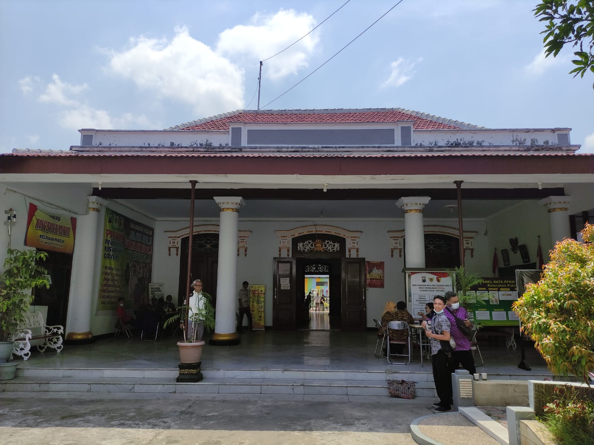
Pusat pelayanan administrasi bagi warga Kelurahan Pakelan. Melayani pembuatan KTP, KK, dan surat pengantar lainnya.
Gedung ini dulunya merupakan bangunan peninggalan era kolonial yang dialihfungsikan. Arsitekturnya masih mempertahankan gaya asli dengan jendela besar dan langit-langit tinggi, mencerminkan identitas Pakelan sebagai Kota Tua.
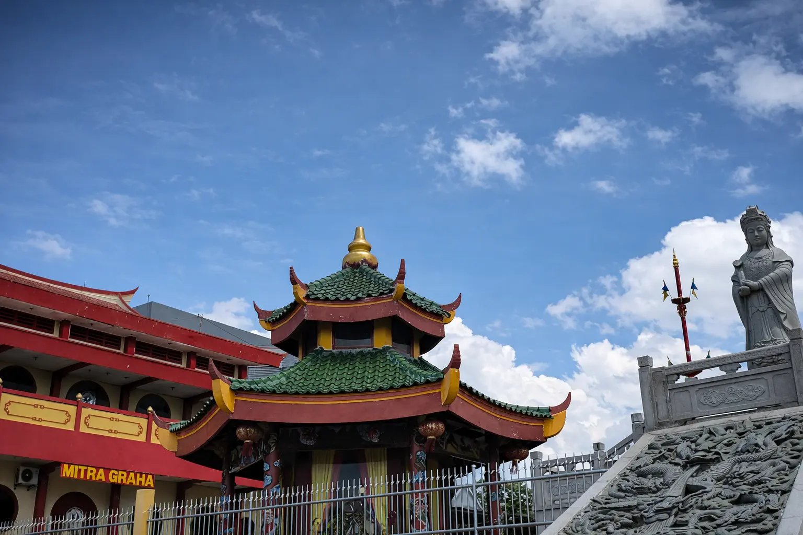
Kelenteng Tjoe Hie Kiong merupakan salah satu bangunan bersejarah dan tempat ibadah tertua di Kota Kediri yang berada di wilayah Kelurahan Pakelan. Selain berfungsi sebagai tempat ibadah umat Tri Dharma (Buddha, Konghucu, dan Tao), kelenteng ini juga menjadi simbol keberagaman dan toleransi antarumat beragama yang telah hidup secara harmonis di lingkungan Pakelan selama puluhan tahun.
Kelenteng Tjoe Hie Kiong didirikan pada tahun 1817 dan merupakan salah satu kelenteng tertua di Jawa Timur. Lokasinya yang berdekatan dengan Sungai Brantas berkaitan erat dengan sejarah perdagangan dan permukiman masyarakat Tionghoa di Kediri. Meski dokumen awal pendirian hilang akibat banjir besar tahun 1955, bangunan ini telah ditetapkan sebagai cagar budaya dan diperkirakan berusia lebih dari dua abad.
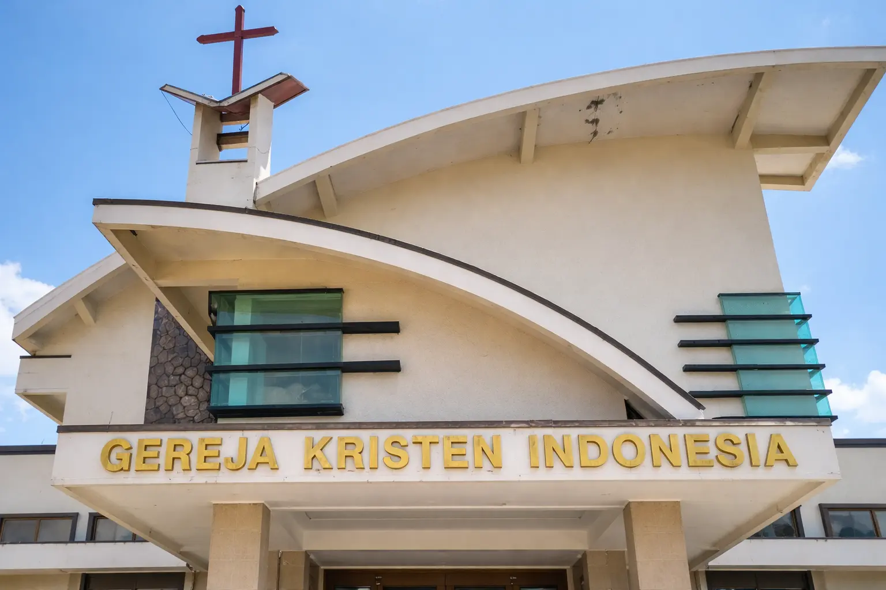
GKI Kediri merupakan salah satu institusi keagamaan yang telah lama hadir dan bertumbuh bersama masyarakat Kelurahan Pakelan. Selain sebagai tempat ibadah, GKI berperan aktif dalam kehidupan sosial warga melalui berbagai kegiatan kemasyarakatan, pendidikan, dan kerja sama lintas lembaga. Kehadiran GKI mencerminkan nilai toleransi dan moderasi beragama yang hidup secara nyata di lingkungan Pakelan.
GKI Kediri berdiri sejak 9 Oktober 1955 dan telah bertumbuh selama hampir tujuh dekade. Pada masa awal, kegiatan ibadah dilakukan secara sederhana dan berpindah-pindah lokasi sebelum akhirnya memiliki gedung sendiri di atas lahan hibah dari tokoh masyarakat setempat. Sejak awal berdirinya, GKI berkembang berdampingan dengan masyarakat Pakelan dan menjaga relasi sosial yang harmonis hingga saat ini.
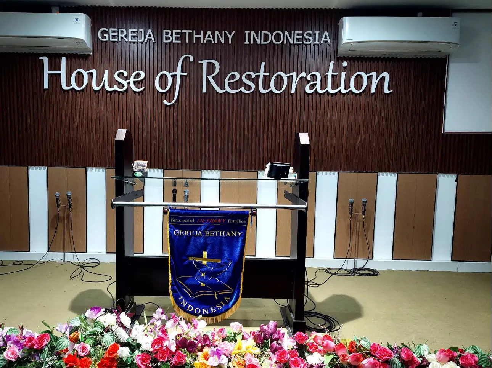
Gereja Bethany Indonesia House of Restoration Kediri merupakan gereja Kristen Protestan aliran Pentakosta Karismatik yang menekankan pengalaman Roh Kudus dan karunia-karunia rohani. Peribadatannya berlangsung secara meriah dengan musik kontemporer, khotbah yang bersemangat, serta penekanan pada kesuksesan hidup secara rohani dan jasmani. Gereja ini dikenal dengan slogan “Successful Bethany Family” sebagai identitas pelayanan dan pembinaan jemaat.
Gereja Bethany berkembang sebagai bagian dari jaringan Gereja Bethany Indonesia yang berpusat di Surabaya, Jawa Timur. Gereja ini dipimpin oleh Pdt. Aswin Tanuseputra dan tergabung dalam Persekutuan Injili Indonesia (PII). Perkembangannya didorong oleh filosofi Yohanes 10:10 yang menanamkan nilai optimisme, kerja keras, dan semangat pantang menyerah dalam kehidupan beriman.
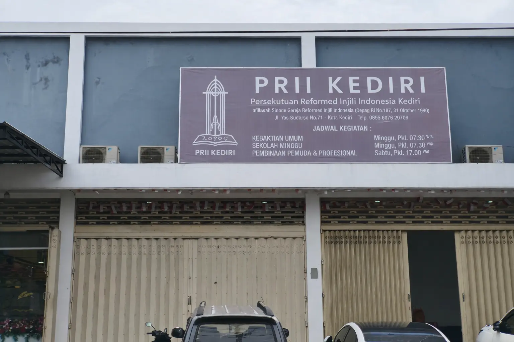
Gereja Reformed Injili Indonesia (GRII) atau PRII Kediri merupakan bagian dari gerakan Reformed Injili yang menekankan pada pengajaran Alkitab yang mendalam (ekspositori) dan doktrin teologi yang kokoh. Berbeda dengan gereja lain di sekitarnya, ibadah di sini dikenal sangat khidmat, berpusat pada pemberitaan Firman Tuhan yang murni, serta penggunaan musik himne klasik. Kehadirannya di Pakelan menjadi wadah bagi jemaat yang rindu akan penggalian kebenaran iman Kristen yang berakar pada sejarah gereja dan mandat budaya.
PRII Kediri berdiri sebagai bagian dari visi besar Pdt. Dr. Stephen Tong untuk mendirikan gereja yang setia pada iman Reformed di setiap kota besar di Indonesia. Bermula dari persekutuan doa dan pemahaman Alkitab (PA) kecil yang dirintis oleh kaum awam dan hamba Tuhan, persekutuan ini terus bertumbuh dan menjadi wadah pembinaan iman yang serius di Kota Kediri. Keberadaannya di kawasan Pakelan menambah kekayaan warna denominasi Kristen yang hidup rukun berdampingan dalam keberagaman kota ini.
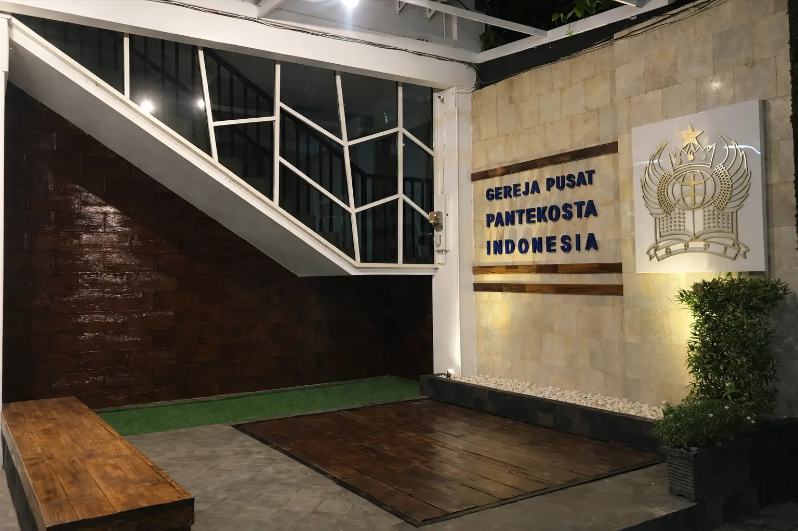
Gereja Pusat Pantekosta Indonesia (GPPI) yang terletak di Jl. Brawijaya No. 27, Kelurahan Pakelan, merupakan gereja yang istimewa karena berfungsi sebagai pusat sinode (kantor pusat) bagi organisasi GPPI di seluruh Indonesia. Berdiri megah di jalur utama kota, gereja ini tidak hanya menjadi tempat peribadatan yang nyaman bagi jemaat beraliran Pentakosta, tetapi juga menjadi ikon toleransi yang hidup berdampingan dengan bangunan niaga dan situs budaya lain di kawasan Pecinan Pakelan.
Sejarah gereja ini dimulai pada tahun 1972, dirintis oleh Dr. Rev. Ch. Paulus, MA bersama istri yang memulai pelayanan sederhana dari sebuah garasi pinjaman. Berkat perkembangan jemaat yang pesat, pada tahun 1983 organisasi ini resmi berdiri sebagai sinode mandiri yang berpusat di Kediri. Gedung permanen yang ada saat ini merupakan hasil renovasi besar yang diresmikan pada tahun 2006 oleh Walikota Kediri, H. A. Maschut, menandai eksistensinya yang kokoh dalam melayani umat dan masyarakat.
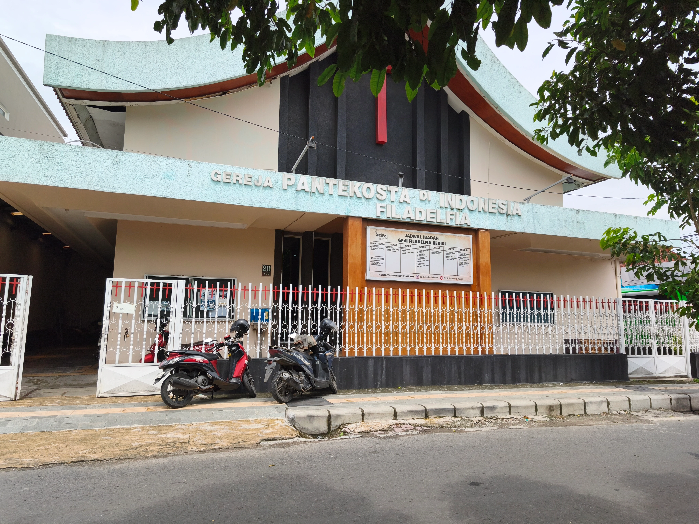
Gereja Pantekosta di Indonesia (GPdI) Jemaat Filadelfia berlokasi di Jl. Dr. Setiabudi No. 20, Kelurahan Pakelan. Sesuai dengan namanya "Filadelfia" yang bermakna "Kasih Persaudaraan", gereja ini dikenal dengan persekutuan jemaat yang erat dan kekeluargaan. Ibadah di sini berlangsung dinamis dengan ciri khas aliran Pantekosta yang menekankan pada peranan Roh Kudus. Gereja ini aktif melayani berbagai kelompok usia, mulai dari Sekolah Minggu, kaum muda, hingga dewasa.
Kehadiran GPdI Filadelfia di kawasan Pakelan menambah kekayaan spiritual dan sejarah di jantung Kota Kediri. Gereja ini telah berdiri dan melayani selama puluhan tahun, tumbuh berdampingan dengan masyarakat sekitar yang majemuk. Di tengah lingkungan Pakelan yang dikenal sebagai kawasan bisnis dan heritage, GPdI Filadelfia terus konsisten menjadi "rumah rohani" yang membina iman jemaatnya sekaligus menjaga harmoni kehidupan beragama di lingkungan sekitar.

Vihara Metta Maitreya Kediri merupakan pusat ibadah umat Buddha aliran Maitreya yang berlokasi di Kelurahan Pakelan, Kota Kediri. Vihara ini berfungsi sebagai tempat peribadatan sekaligus pusat kegiatan keagamaan dan sosial bagi komunitas Buddha. Selain ibadah harian, vihara ini juga aktif menyelenggarakan perayaan hari besar Buddhis.
Vihara Metta Maitreya terletak di kawasan bersejarah yang berdekatan dengan Klenteng Tjoe Hwie Kiong dan Jembatan Lama Kediri. Lokasi tersebut menjadikan vihara ini bagian dari warisan budaya penting kota Kediri. Karena nilai sejarahnya, vihara ini ditetapkan sebagai salah satu cagar budaya di wilayah Pakelan.
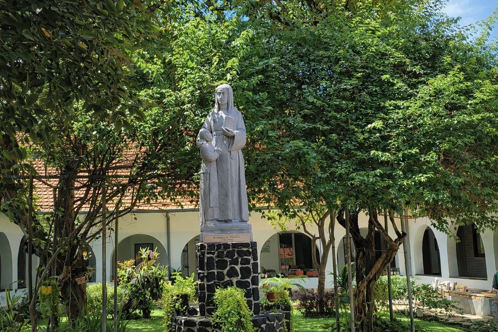
Kesusteran di wilayah Kelurahan Pakelan merupakan bagian dari komunitas religius Katolik yang berperan dalam kegiatan pelayanan sosial, pendidikan, dan kemasyarakatan. Kehadiran para suster tidak hanya berfokus pada kehidupan religius internal, tetapi juga berkontribusi dalam berbagai kegiatan yang bersentuhan langsung dengan masyarakat sekitar.
Para suster di Pakelan terlibat dalam berbagai bentuk pelayanan, seperti pendampingan pendidikan, kegiatan sosial, serta dukungan bagi masyarakat yang membutuhkan. Aktivitas ini dilakukan sebagai bagian dari pengabdian kemanusiaan dan dijalankan secara terbuka tanpa membedakan latar belakang agama maupun sosial warga.

Gie Kie Kong Soe, yang kini dikenal sebagai Perkumpulan Rukun Sinoman Dana Pangrukti, merupakan yayasan sosial Tionghoa tertua di Kota Kediri. Lembaga ini berfungsi sebagai rumah duka yang melayani pengurusan jenazah bagi masyarakat secara lintas agama dan etnis. Keberadaannya mencerminkan nilai sosial, toleransi, dan kepedulian kemanusiaan yang telah terjaga hingga kini.
Gie Kie Kong Soe didirikan pada 25 Agustus 1875 oleh tokoh-tokoh Tionghoa di Kediri dan disahkan secara hukum oleh pemerintah Belanda. Awalnya, perkumpulan ini berfungsi sebagai dana pemakaman (begrafenisfond) bagi komunitas Tionghoa. Berlokasi di Kelurahan Pakelan, lembaga ini menjadi bagian penting dari warisan sejarah dan keberadaan komunitas Tionghoa di Kota Kediri.
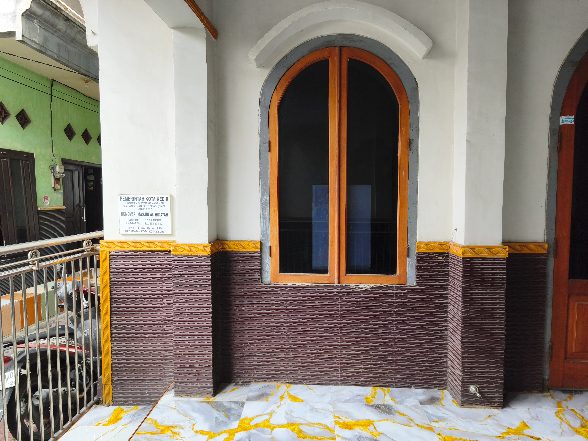
Masjid Al-Hidayah yang terletak di Jalan Trunojoyo ini memiliki keunikan tersendiri sebagai satu-satunya masjid yang berdiri di tengah kawasan Kelurahan Pakelan yang dikenal sebagai "Kampung Pecinan" Kediri. Keberadaannya di tengah pemukiman warga yang mayoritas non-muslim menjadi simbol nyata dari kerukunan dan toleransi antarumat beragama di Pakelan. Bangunannya sederhana namun nyaman, menjadi pusat ibadah utama bagi warga muslim setempat serta para pedagang dan pekerja yang beraktivitas di kawasan bisnis ini.
Masjid ini didirikan untuk memfasilitasi kebutuhan ibadah komunitas muslim yang tinggal berdampingan dengan warga Tionghoa di kawasan Pakelan. Sejak awal berdirinya, Masjid Al-Hidayah telah menjadi saksi bisu harmonisnya kehidupan sosial di Pakelan. Tidak pernah terjadi gesekan sosial di sini; sebaliknya, masjid ini justru mempererat tali persaudaraan, di mana suara adzan berkumandang damai bersandingan dengan lonceng gereja dan aktivitas kelenteng, menciptakan harmoni indah "Kampung Kebangsaan" Kota Kediri.
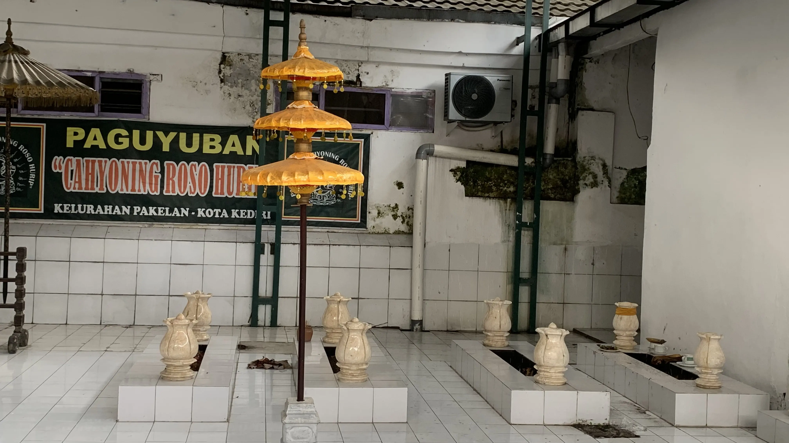
Punden Pakelan merupakan salah satu situs budaya dan tradisi yang masih dijaga keberadaannya oleh masyarakat Kelurahan Pakelan. Tempat ini menjadi ruang bersama bagi warga dalam menjaga nilai-nilai kebudayaan, gotong royong, dan kebersamaan lintas latar belakang sosial maupun agama. Hingga kini, Punden Pakelan masih digunakan sebagai lokasi berbagai tradisi masyarakat setempat.
Berdasarkan penuturan masyarakat setempat, Punden Pakelan dikaitkan dengan sejarah masa transisi antara Kerajaan Majapahit dan Kesultanan Demak. Situs ini dipercaya berkaitan dengan tokoh Dewi Sekar Taji serta beberapa tokoh yang hidup pada masa tersebut. Selain memiliki nilai sejarah, punden ini juga menyimpan makna budaya dan spiritual yang diwariskan secara turun-temurun oleh warga Pakelan.

Kesenian jaranan di Kelurahan Pakelan merupakan seni tradisional yang berfungsi sebagai hiburan, sarana kebersamaan, dan penggerak ekonomi warga melalui kegiatan budaya. Kesenian ini memiliki struktur organisasi, aturan keanggotaan, serta ragam pertunjukan seperti kuda lumping, barongan, dan properti pendukung lainnya.
Jaranan Pakelan dikenal sebagai kesenian ikonik daerah yang dahulu sering dipentaskan untuk tamu dari luar daerah dan acara penting masyarakat. Perkembangannya diwariskan secara turun-temurun dengan peran tokoh-tokoh lokal yang menjaga keberlanjutan dan identitas budaya setempat.
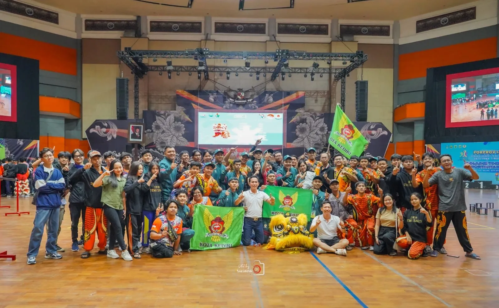
Barongsai adalah seni pertunjukan budaya Tionghoa yang sarat makna filosofis, berfungsi sebagai simbol penolak bala, pembawa keberuntungan, sekaligus media pemersatu lintas etnis dan agama di masyarakat.
Barongsai sempat mengalami pelarangan tampil di ruang publik pada periode 1965–1998, namun kembali berkembang sejak kebijakan keterbukaan tahun 2000 dan kini diakui sebagai cabang olahraga prestasi serta bagian dari budaya nasional Indonesia.
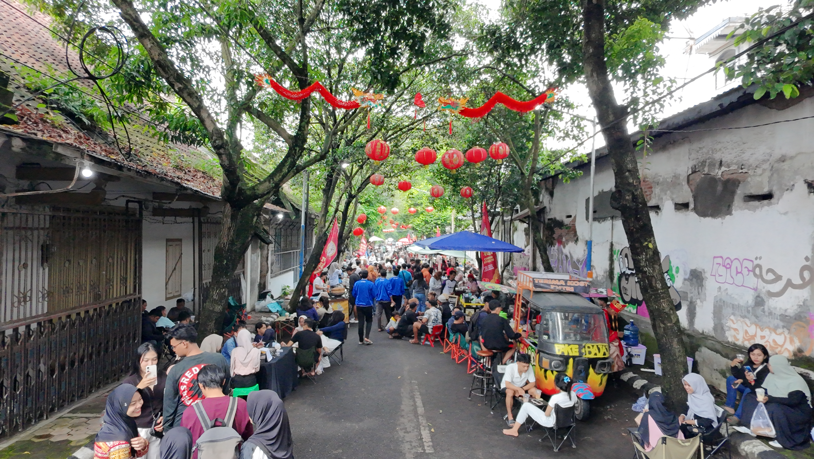
KOPINANG atau "Kopi Pagi Pecinan Ngangeni" adalah destinasi wisata kuliner mingguan yang hadir setiap hari Sabtu pagi (pukul 06.00 - 10.00 WIB). Mengusung konsep Slow Morning Market, pengunjung dapat menikmati sarapan, jajanan pasar, dan kopi seduh manual di sepanjang jalanan Pakelan yang berlatar bangunan tua estetik. Selain kuliner, acara ini sering dimeriahkan dengan *live music*, pameran komunitas, hingga layanan unik seperti ramal kartu tarot, menjadikannya tempat nongkrong pagi yang hangat dan *instagramable*.
KOPINANG merupakan inovasi terbaru yang digagas oleh pemuda dan komunitas warga Pakelan pada akhir tahun 2025. Inisiatif ini lahir dari kerinduan untuk menghidupkan kembali suasana "kota tua" Pakelan yang biasanya sepi menjadi ruang publik yang dinamis. Berawal dari gerakan swadaya tanpa anggaran pemerintah, KOPINANG kini sukses mentransformasi kawasan heritage ini menjadi pusat ekonomi kreatif baru yang memberdayakan UMKM lokal sekaligus melestarikan nuansa nostalgia Pecinan Kediri.